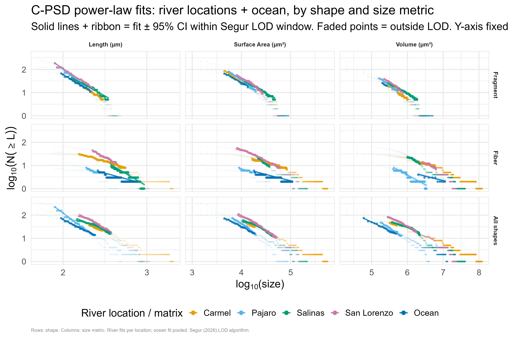
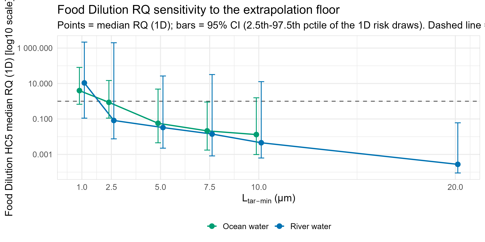

The apparent food-dilution risk of microplastics is method-conditional
Authors: Scott Coffin¹* [co-authors to complete]¹ Office of Environmental Health Hazard Assessment (OEHHA), California Environmental Protection Agency, Sacramento, CA, USA* Corresponding author: scott.coffin@oehha.ca.gov
Intended for Environmental Science & Technology (Article / Policy Analysis).
Abstract
Probabilistic ecological risk assessment (ERA) of microplastics rescales size-limited monitoring data to a common 1-5000 µm range and compares it against species sensitivity distribution (SSD)-derived thresholds. We conducted a fully two-dimensional (2D) probabilistic ERA for four central California rivers (Carmel, Pajaro, Salinas, San Lorenzo) and adjacent coastal water. Cumulative particle size distributions (C-PSD) were fitted with the method of Segur et al. (2026) 1 - an implementation validated bit-identical to the authors’ own reference code across all nine matrix × shape distributions (max |Δα| = 8.4×10⁻¹⁵) 1 - and exposure and hazard uncertainty were propagated through a Monte Carlo framework separating variability from uncertainty, with hazard thresholds derived from a probabilistic SSD (pSSD++) built on the ToMEx 2.0 database. At the field-standard 1 µm lower size floor, the food-dilution risk quotient (RQ) exceeds unity in both matrices (river median 2D RQ = 7.88, P(RQ>1) = 100%; ocean = 3.28, P(RQ>1) = 73.8%) 1, whereas tissue translocation remains below threshold (river RQ = 0.194; ocean RQ = 0.037) 1. This exceedance is not robust. It collapses below unity when the lower size floor is raised from 1 to 2.5 µm, and a formal decomposition shows it is generated by which toxicity studies enter the SSD rather than by the extrapolation of exposure to unmeasured small particles: holding the study set fixed while rescaling exposure and hazard coherently leaves the river RQ at 0.636, and admitting sub-10 µm-tested studies collapses the food-dilution HC5 from ~1200 to ~68 particles/L to produce the exceedance. Because this ~68 particles/L HC5 reproduces the published field-standard value (Koelmans freshwater HC5 = 75.6 particles/L) 2, the fragility is a property of the standard method, not of these sites. An independent two-segment (piecewise) exposure model, strongly favored by the data, brings the river food-dilution RQ down to ~1.08. We conclude that food-dilution threshold exceedance cannot be excluded but should not be reported as a robust finding of likely harm, and we offer the floor-sensitivity decomposition as a transferable diagnostic for microplastic ERA.
Keywords: microplastics; ecological risk assessment; species sensitivity distribution; particle size distribution; food dilution; probabilistic modeling; uncertainty
Synopsis
A fully probabilistic microplastics risk assessment shows that the standard method’s food-dilution exceedance is conditional on the assumed lower size floor and on mechanism-inconsistent toxicity-study inclusion, with implications for how the field derives and reports risk.
1. Introduction
Microplastics are now ubiquitous in aquatic systems, and translating their measured occurrence into defensible ecological risk statements has become a central regulatory challenge. Two features of microplastics make this uniquely difficult. First, exposure is size-distributed across several orders of magnitude, yet monitoring quantifies particles only above a method-dependent lower size limit; in California and elsewhere, most microplastic surface-water monitoring data are based on particle sizes greater than 355 µm - the pore size of widely used manta trawl nets - even though toxicity is generally greater for smaller particles, and particles down to 1 µm are hypothesized to be exponentially more abundant than larger ones, so uncorrected monitoring data may not reflect true exposures 3. Second, hazard is mechanism- and size-dependent, so a single concentration metric cannot capture toxicity across the size range.
The field-standard response, formalized by Koelmans et al. (2020), rescales measured concentrations to a default 1-5000 µm range using power-law correction factors and evaluates them against effect thresholds derived over the same 1-5000 µm range 4. Hazard is partitioned by two hypothesized mechanisms: food dilution, in which particles fill the gut and dilute nutritional intake, and tissue translocation, in which particles cross epithelial barriers and cause oxidative stress 5. These mechanisms are size-partitioned in a specific way - larger particles are more toxic at lower concentrations through food dilution (governed by ingestibility and gut volume), whereas smaller particles are more toxic at higher concentrations and are more likely to translocate 6 - and are therefore aligned to different dose metrics: volume for food dilution and surface area for tissue translocation, rescaled to 1-5000 µm, with particles shorter than 83 µm most relevant to trigger translocation 7. Applying this machinery, Mehinto et al. (2022) derived management thresholds for food dilution ranging from 0.3 to 34 particles/L and for tissue translocation from 60 to 4110 particles/L, adopting a freshwater food-dilution HC5 of 75.6 particles/L (95% CI 11-521) from Koelmans et al. and a marine HC5 of 33.3 particles/L from Everaert et al. 2 The same framework has since been applied to the Laurentian Great Lakes 5 and to freshwater benthic ecosystems worldwide, where the conclusion was that risks cannot be excluded 8.
Two coupled assumptions in this workflow are rarely tested. The rescaling extrapolates concentration far below the measurement floor, and its magnitude depends on the assumed lower bound. Simultaneously, the SSD’s membership depends on that same bound, because studies conducted on very small particles become eligible as the floor is lowered - and small particles are disproportionately potent: HC5 estimates fall steeply with decreasing particle length, and fibers are roughly 100× more potent than spheres and fragments of the same length 9. Whether the resulting risk signal reflects genuine exposure or an artifact of these coupled choices has not, to our knowledge, been disentangled on a real dataset.
Here we (i) conduct a fully probabilistic ERA for four central California rivers and adjacent coastal water; (ii) test the robustness of the resulting risk conclusion to the lower size floor; and (iii) introduce a decomposition that partitions the RQ’s floor-dependence into exposure-extrapolation, hazard-alignment, and study-composition components. We use the new dataset as a demonstration case, but our central finding is methodological: the widely reported food-dilution exceedance is method-conditional in a way that has field-wide implications.
2. Materials and Methods
The assessment is a fully reproducible R/Quarto workflow proceeding in five steps: (1) raw particle data to a power-law slope via C-PSD fitting (Segur et al. 2026); (2) probabilistic rescaling of monitoring concentrations by power-law integration with Monte Carlo slope-uncertainty propagation (Coffin et al. 2022); (3) an environmental exposure distribution (EED) by nonparametric bootstrap of corrected site concentrations; (4) hazard threshold distributions via probabilistic SSDs (pSSD++) using the PSSDplusplus R package and the ToMEx 2.0 database; and (5) risk characterization by Monte Carlo pairing of exposure and hazard, expressed as RQ = exposure/hazard and exceedance probability P(RQ>1) 1.
2.1 Study sites and monitoring data
Surface-water microplastics were characterized in four central California rivers - Carmel, Pajaro, Salinas, and San Lorenzo 1 - and in adjacent coastal (ocean) water analyzed with the same µFTIR workflow as river water 1. Monitoring concentration replicates comprised 217 subsurface and 253 surface river samples 1 and 85 ocean-water samples 1. Per-river support was adequate for independent analysis: 221, 451, 161, and 374 particles and 106, 114, 119, and 131 monitoring replicates for Carmel, Pajaro, Salinas, and San Lorenzo, respectively 1. Sediment (“beach sand”) was retained only as an illustrative methods demonstration and excluded from the headline risk conclusion, because its exposure concentration is a per-liter water value with no dry-mass basis rather than a genuine particles/kg-dry-weight measurement 1; all results below concern surface water.
2.2 Particle characterization and detection floor
Particles retained from µFTIR imaging were classified by shape (fiber vs. fragment, with fibers defined by aspect ratio ≥ 3) and assigned to polymer density groups following Hidalgo-Ruz et al. (2012) 1. The µFTIR analysis used a ~4× objective with 25 µm pixel size, giving a practical minimum detectable particle size of ~50 µm (L_meas_min = 50 µm), a value already embedded in the correction-factor calculation 1; particles at or above 100 µm are reliably detected by this system 1. We did not apply an additional magnification-based scaling: although Wang et al. (2026) report that a 4× µFTIR objective detects only 3 ± 3% of particles relative to a 25× reference 1, applying that ×33 factor on top of the existing correction factor would double-count the same particle pool that the power-law extrapolation already reconstructs 1.
2.3 C-PSD fitting and validation
Length-based C-PSDs were fitted per matrix and shape using the C-PSD method, which fits N(≥L) versus L on a log-log scale using binned count data, removing the bin-width bias inherent in the classic bin-normalized (BN-PSD) approach (Segur et al. 2026) 1. The two-step LOD algorithm bins the measurements, computes both BN-PSD and C-PSD, performs global OLS to obtain normalized residuals, retains bins with positive residuals at or above the BN-PSD peak, exhaustively tests contiguous sub-windows of ≥3 bins, accepts windows with R² ≥ 0.90, selects the longest accepted window, and fits OLS to log₁₀ N(≥L) versus log₁₀ L, with the differential slope a = a_cpsd − 1 1. We adopt C-PSD as the production method because Segur et al. (2026) show the BN-PSD method alone is insufficient to correct binning bias, whereas the cumulative C-PSD approach removes it and returns accuracy comparable to maximum-likelihood estimation (MLE) 1. We independently validated our implementation against the Segur et al. reference PSD_fit.py code by re-fitting all nine matrix × shape particle-length PSDs under both implementations and comparing the resulting slopes and LOD bin windows [Table S2; Appendix B]. We carry forward the two caveats the authors flag: the C-PSD right tail slumps where large particles are undercounted, and the method necessarily extrapolates below the measured range, requiring careful fitting-window selection 1.
2.4 Exposure rescaling and EED
Concentrations were rescaled by power-law integration: for a differential PSD dN/dL = k·L^a, the concentration in [L₁, L₂] is proportional to k/(a+1)·(L₂^(a+1) − L₁^(a+1)), and the correction factor is CF = N(L_target_min, L_target_max) / N(L_meas_min, L_meas_max), implemented as correction_factor() following Coffin et al. (2022) 1. The convention is guarded by a rendered worked example: Koelmans et al. (2020) report that rescaling a 30-2000 µm range to 1-5000 µm at a differential slope α = 1.6 gives CF = 8.32 (100 → 832 particles/L) 1, reproduced by the pipeline. The slope is treated as uncertain via a truncated-normal distribution, and following Hoffman et al. (2026), an explicit structural uncertainty of slope_structural_sd = 0.25 is added beyond the fit standard error, because transport can produce apparent dual-slope PSDs whose exponents differ by about two 1. Corrected concentrations were bootstrapped to an EED at the 1-5000 µm target range.
2.5 Hazard: pSSD++ / ToMEx 2.0
Hazard thresholds were derived with the pSSD++ implementation from quality-screened ToMEx 2.0 records aligned to both ERMs using bioaccessibility models and particle traits, filtered to remove bacteria, plants, and HONEC endpoints and to pass minimum technical and risk QC criteria (43 unique species × polymer × shape combinations for freshwater) 1, joined with a marine set of 493 records across 10 taxonomic groups 1. Each endpoint was aligned by Monte Carlo simulation: for food dilution, a volumetric dose is computed from particle volume and organism gut volume; for tissue translocation, particle flux to tissue is computed with a size-dependent model that includes only particles below the 500 µm translocation threshold 1, generated over x1M = 1 µm to x2D = 5000 µm with an upper tissue truncation limit of 500 µm 1. The resulting freshwater PNEC (HC5) distributions were median 68.5 particles/L (Q5 0.562, Q95 3570) for food dilution and 2960 particles/L for tissue translocation 1 [Figure S3; Table S3].
2.6 Risk characterization: MC1D and MC2D
Risk was characterized under two schemes. The one-dimensional (MC1D) scheme samples hazard and exposure jointly over 1000 draws 1. The two-dimensional (MC2D) scheme, which is our primary basis, separates uncertainty from variability: the outer loop samples uncertain parameters (a correction-factor draw and one hazard draw per ERM/HCx; n_uncertainty = 300), while the inner loop samples exposure variability from the observed monitoring concentrations (n_variability = 1000) 1. Consequently each outer iteration is one plausible “world” of uncertainty, within which the inner loop yields P_exceed, RQ_p50, RQ_p95, and RQ_p99; the distribution of these summaries across outer iterations quantifies uncertainty in the risk metrics, while the inner loop represents variability in exposure 1. This distinction explains why MC1D and MC2D can share an RQ median while reporting different exceedance probabilities: MC1D reports a pooled/marginal exceedance, whereas MC2D reports the distribution (median and 5th-95th percentiles) of the conditional exceedance probability.
2.7 Robustness analyses
We tested three robustness questions. (a) Floor sensitivity: the lower target floor L_tar_min was varied across {1, 2.5, 5, 7.5, 10, 20} µm and the full pipeline re-run at each. (b) Decomposition: because moving the floor simultaneously re-extrapolates exposure, shifts the SSD alignment range, and changes SSD membership, we froze study membership at a common ≥10 µm reference set and re-ran the pipeline in scenarios isolating each component, attributing the RQ change in log space. (c) Model-form bounding: a two-segment (piecewise) C-PSD was fitted as a labeled bounding sensitivity against the single-slope production model; a lognormal/MLE alternative was also examined for the sub-floor extrapolation (SI).
3. Results
3.1 Particle characterization
Raw morphometry comprised 229 fibers (mean length 246 µm, range 75-2100 µm) and 978 fragments (mean length 98.9 µm, range 50-505 µm) in river water (n = 1207) 1, and 117 particles in ocean water 1. River particles were dominated by polyester/PET (n = 300), polypropylene (n = 212), polyamide/acrylamide (n = 205), and styrenic polymers (n = 164) 1 [Table S1].
3.2 Particle size distributions, slopes, and implementation validation
Pooled C-PSD fits were well-constrained for river water (all particles α_CPSD = −1.920 ± 0.035, LOD 165-385 µm, R² = 0.988; fragments −2.739 ± 0.038; fibers −1.671 ± 0.046) 1 and for ocean fragments and pooled particles (ocean all −1.765 ± 0.035, R² = 0.994; fragments −2.151 ± 0.042) 1, whereas the ocean fiber slope (−0.981 ± 0.099, only 5 bins) 1 is poorly constrained and excluded from headline inference [Table 1; Figure 1]. All fitted LOD windows fall entirely within the ≥100 µm range where particle detection is reliable (Section 2.2), so none of the headline slope fits rest on the less-reliable 50-100 µm size class. Consistent with fragmentation, fibers exhibit shallower slopes than fragments 1; a shallow measured fiber slope is also consistent with possible under-retention of fine fibers whose short axis can pass a nominal 50 µm pore, making observed fiber concentrations a minimum estimate 1. Slopes varied by river [Figure S1], driving by-river differences in exposure (Section 3.6).
As shown in Figure 1, fitted C-PSD slopes differed by matrix and shape.

Our C-PSD implementation was independently validated as bit-identical to the Segur et al. (2026) reference PSD_fit.py code across all nine matrix × shape particle-length PSDs (max |Δa_cpsd| = 8.44×10⁻¹⁵, matching n_bins for all nine) 1 [Table S2; Appendix B].
3.3 Exposure
The median river rescaling factor was 22,465× (90% CI 3,106-175,514), converting concentrations measured over 165-385 µm to 1-5000 µm 1, and 3,834× (90% CI 655-23,195) for ocean water 1. Bootstrap EEDs were 646.4 particles/L at the median (95th percentile 3,921.7) for river water 1 and 108.3 particles/L (95th percentile 184.1) for ocean water 1 [Table 2; Figure S2].
3.4 Hazard thresholds
Community HC5 thresholds at the 1 µm floor were 68.5 particles/L (food dilution) and 2960 particles/L (tissue translocation) for freshwater 1 and 24.8 particles/L (ocean food dilution) 1. The most sensitive species were Moina macrocopa (river food dilution, 9 species in the SSD), Ceriodaphnia dubia (river tissue translocation, 11 species), and Pseudechinus huttoni (ocean, 15-16 species) 1 [Figure 2; Table S3].
3.5 Headline risk characterization (1 µm floor)
Food dilution is risk-dominant and tissue translocation is below threshold in both matrices. Under MC1D, river food-dilution median RQ = 9.03 (P(RQ>1) = 82.2%) and tissue translocation = 0.226 (29.8%) 1, and ocean food-dilution RQ = 3.94 (91.9%) and tissue translocation = 0.039 (7.6%) 1. Under the primary MC2D framework, river food dilution = 7.88 (P(RQ>1) = 100%) and tissue translocation = 0.194 (20.1%); ocean food dilution = 3.28 (73.8%) and tissue translocation = 0.037 (7.8%) 1 [Table 3; Figure 3]. Outer-loop uncertainty is large: the river food-dilution MC2D exceedance probability ranges from a 5th percentile of 0.076 to a median of 1.0 1.
3.6 By-river and individual-species screens
Exceedance tracked the fitted slope and correction factor across rivers, from Salinas (food-dilution RQ = 0.893, P = 0.475) and Carmel (2.876, 0.664) to San Lorenzo (11.694, 0.829) and Pajaro (68.150, 0.957) 1 [Figure S4]. An individual-species early-warning screen - read as a companion to, not a substitute for, the community-HC5 RQ, following Thuy-Dung et al. (2026), who show an individual-species RCR > 1 can precede a community-HC5 signal by roughly a decade 1 - showed the most sensitive river species below threshold (Moina macrocopa food-dilution RCR = 0.173; Ceriodaphnia dubia translocation RCR = 0.004), whereas the ocean’s most sensitive species Pseudechinus huttoni exceeded for food dilution (RCR = 4.151, P_exceed = 1) 1 [Table 4].
3.7 The exceedance is not robust to the lower size floor
The food-dilution exceedance is a knife-edge on the size floor. Raising L_tar_min from 1 to 2.5 µm drops the river RQ below unity and it continues to fall: river median RQ (1D) = 9.403, 0.094, 0.053, 0.011, and 0.004 at 1, 2.5, 5, 7.5, and 10 µm; ocean = 4.058, 1.088, 0.070, 0.018, and 0.011 1 [Figure 4; Table 5]. Counterintuitively, the HC5 jumps upward as the floor rises off 1 µm: the river food-dilution HC5 median is 68.5 particles/L at a 1 µm floor but 1101.7 at 2.5 µm and 1319.4 at 10 µm 1. At the highest floors the marine SSD becomes data-limited - too few marine species remain to construct a food-dilution SSD at 20 µm, a genuine data-sparsity limit rather than a pipeline defect 1.
3.8 Decomposition: study inclusion, not extrapolation, creates the exceedance
Decomposing the river collapse between 1 and 10 µm isolates three multiplicative components: exposure extrapolation contributes an 80.5× fold-change, hazard-alignment range 2.0×, and study composition 14.8× 1. By raw magnitude, exposure extrapolation is the larger lever - but it does not determine the exceedance. When exposure and hazard are rescaled coherently to the same range while the study set is held fixed, the river food-dilution RQ at a 1 µm floor is only 0.636 (1D), with the HC5 remaining high at ~1205 particles/L; allowing the study set to open collapses the HC5 and raises the RQ to 9.403 1. The exceedance is thus produced by admitting sub-10 µm-tested studies, which collapse the food-dilution HC5 from ~1200 to ~68 particles/L. This holds across risk statistics: under MC2D the fixed-study-set river RQ is 1.508 versus 12.383 when the set tracks the floor 1, an ~8× study-inclusion margin, and the ocean fixed-set RQ stays below 1 under both statistics [Figure 5; Table 6]. The tissue-translocation decomposition inherits a conservative caveat: the ≥10 µm composition freeze removes the small particles most relevant to translocation, so those diagnostics are a lower bound on translocation hazard, not a translocation risk estimate 1.
3.9 The fragility is a property of the standard method
The food-dilution HC5 that generates the exceedance, ~68.5 particles/L for river water 1, reproduces the field-standard value: Koelmans et al. (2020) derived an ingestible-volume, bioavailability-corrected food-dilution HC5 of 75.6 #/L (95% CI 11-521) over the 1-5000 µm range 4, the value Mehinto et al. (2022) adopt as the freshwater food-dilution threshold 2. Because an independently constructed SSD lands on essentially the same HC5, the exceedance is what the standard 1-5000 µm alignment yields wherever exposure is rescaled to that range - the same machinery behind the Great Lakes exceedances.
3.10 Model-form bounding: the two-segment exposure model
The data favor a two-segment PSD over a single slope. For river water, the two-segment fit has a break at 225 µm with a shallow fine-size slope (α_cpsd = −1.441) and a steeper coarse-size slope (−2.166), and a ΔAIC of −44.0 strongly favoring the two-segment model; the fitted critical size (~36 µm) falls inside the 1-LOD extrapolation zone rather than the fit window 1. Because the fine-size slope is shallower, the piecewise correction factor sits below the single-slope value, narrowing the RQ estimate 1: the piecewise bounding river food-dilution RQ is 1.080 (versus 9.034 single-slope) and ocean is 1.512 (versus 3.944), with tissue translocation far below 1 under both models 1 [Table 6; Figure S5]. The direction is not universal, however: independent field evidence suggests single power laws may under-extrapolate small particles - in the St Louis Estuary a single power law extrapolated to 1.3-12 particles/L for 5-5000 µm while flow cytometry measured 600-1600 particles/L in the same system (Thomas et al. 2024), and Segur et al. (2026) find size-aligned 1-5000 µm concentrations average ~600× higher than single-slope extrapolated values 1. The sub-floor zone is therefore unconstrained in both directions, and the piecewise result is a labeled bounding sensitivity, not a replacement for the single-slope production correction factor 1.
4. Discussion
4.1 What the numbers mean
Read at face value, the headline is that microplastics pose a likely food-dilution risk in these waters. The robustness analyses show this reading is unsafe. The exceedance depends on a single poorly constrained assumption - the 1 µm floor - and on a hazard-side step, admitting very small particles into a volume-based food-dilution SSD, that is mechanistically questionable. The framework itself holds that food dilution is a large-particle, gut-volume mechanism and that small particles preferentially drive translocation, with translocation-relevant effects concentrated below 83 µm and aligned to surface area rather than volume 7. Yet it is precisely the sub-10 µm studies - whose effects are more plausibly translocation- or oxidative-stress-mediated - that collapse the food-dilution HC5, consistent with the observation that chronic potency rises sharply as particle length decreases 9. Their inclusion in a volume-aligned SSD may therefore mis-assign translocation-type potency to the food-dilution mechanism.

4.2 Can risk be claimed as “likely”?
We judge that it cannot, for food dilution as currently derived - but neither can it be dismissed. Against a robust claim: the exceedance evaporates by a 2.5 µm floor; a data-favored two-segment exposure model brings the river RQ to ~1.08; it requires the contested study-inclusion step; the confidence intervals span orders of magnitude; and tissue translocation, the mechanism small particles actually favor, is below threshold throughout. In favor of caution: the small particles driving the signal are genuinely present and systematically undercounted near 50 µm, so exposure extrapolation is defensible and is in fact the larger raw lever, and field evidence indicates single power laws may under-extrapolate them (Thomas et al. 2024; Segur et al. 2026) 1; and under the field’s own accepted HC5, the exceedance is real. The scientifically defensible register is therefore the one the field itself uses for microplastics - that risk cannot be excluded - rather than “likely,” mirroring the benthic conclusion that risks to benthic communities cannot be excluded at current sediment concentrations worldwide 8.
4.3 Contribution beyond a site-specific assessment
A fifth site-specific characterization would add little to a literature already spanning lakes, estuaries, and sediments. The contribution here is methodological and generalizable. (1) We provide a floor-sensitivity decomposition that partitions the RQ’s dependence on the lower size floor into exposure-extrapolation, hazard-alignment, and study-composition components - a transferable diagnostic any size-rescaled SSD assessment can run to test whether its risk signal is robust or an artifact of coupled assumptions. (2) We demonstrate on real data that the food-dilution exceedance is study-inclusion-driven and reproduces the published field-standard HC5, elevating a local result into a structural observation about the method. (3) We implement a fully 2D probabilistic characterization with C-PSD fitting validated bit-identical to the Segur et al. (2026) reference implementation 1, separating variability from uncertainty so the fragility is visible rather than hidden inside a point estimate.
4.4 Additional structural uncertainties
Two further uncertainties bound the interpretation. First, transport can distort the observed PSD: size-dependent differential vertical transport (Hoffman et al. 2026) can produce apparent dual-slope PSDs whose exponents differ by about two 1, affecting absolute concentrations through the correction-factor exponent and comparisons when shape, depth, or buoyancy classes are pooled. In this dataset the effect did not overturn the headline: depth-stratified fits were broadly consistent (subsurface a_psd = −2.875 vs surface −2.805, food-dilution RQ ≈ 4.8 and 4.2) 1, and density-driven vertical sorting by buoyancy was not evident, with the subsurface buoyant fraction numerically higher than the surface fraction 1. Second, fragmentation makes hazard time-dependent: as particles fragment into smaller, more bioaccessible sizes over time, HC5 values and risk ratios shift dynamically in accumulating compartments (Thuy-Dung et al. 2026), implying that the size-floor sensitivity documented here is also, implicitly, a temporal one.
4.5 Limitations
The µFTIR detection floor (~50 µm) means the sub-floor population is reconstructed, not measured, and the 50-100 µm class may be undercounted by 10-30% 1. The marine SSD is data-limited at larger floors, and the ocean fiber PSD is under-constrained. The correction-factor CIs span two to three orders of magnitude. Finally, the mechanism-misassignment argument is inferential: it follows from the framework’s own size-mechanism logic and the steep length-potency relationship, but a definitive test would require re-deriving the food-dilution SSD with mechanism-consistent study inclusion (a direction we identify below).
5. Environmental Implications
Microplastic risk assessments that rescale monitoring data to a common size range and compare it against SSD thresholds can produce food-dilution threshold exceedances that are conditional on the assumed lower size floor and on the inclusion of small-particle toxicity studies of contested mechanism. For central California surface waters, food-dilution exceedance cannot be excluded but is not a robust finding of likely harm, and tissue-translocation risk is consistently below threshold. Three implications follow. First, risk conclusions from size-rescaled SSDs should be accompanied by an explicit floor-sensitivity analysis, because the headline can invert across a defensible 1-2.5 µm change in a single assumption; the decomposition offered here makes that dependence auditable. Second, SSD construction should be mechanism-consistent - aligning sub-10 µm studies whose effects are plausibly translocation-mediated to a volume-based food-dilution SSD may over-state food-dilution hazard. Third, resolving the dominant uncertainty requires monitoring that resolves particles well below 50 µm, so that both the exposure extrapolation and the study-inclusion range are anchored in measurement rather than assumption. Until then, the most defensible statement is that microplastic risk to these communities cannot be excluded - a conclusion that supports precautionary monitoring and source control while the mechanistic basis of the thresholds is strengthened.
Figures
• Figure 1. C-PSD power-law fits by matrix and shape (length metric), river and ocean water, with fitted LOD windows and slopes. [HTML: ocean_length_cpsd_plot, river equivalents; Key Findings Summary table.]
• Figure 2. Probabilistic species sensitivity distributions (pSSD++) for freshwater food dilution and tissue translocation, showing HC5 and its uncertainty. [HTML: arranged_plot_river, PNEC_plot_05_river, hazard_threshold_plot.]
• Figure 3. Headline risk characterization at the 1 µm floor: MC2D RQ distributions and P(RQ>1) for river and ocean water, food dilution vs tissue translocation. [HTML: rq_plot, ocean_rq_plot_1d, mc2d_pexceed_hist.]
• Figure 4. Food-dilution RQ sensitivity to the lower size floor (1-20 µm), river and ocean, with the RQ = 1 reference and HC5 overlay. [HTML: m12_plot.]
• Figure 5. Study-inclusion effect: MC vs Arm B (fixed ≥10 µm study set) RQ versus floor, faceted by compartment, with the paired study-inclusion effect panel. [HTML: m2_scenario_plot + decomposition m2_fig1; per Spec M2.1.]
Supporting Information Figures/Tables
• Table 1. C-PSD slopes (α_CPSD ± SE, LOD, R²) by matrix and shape. [HTML: Key Findings Summary.]
• Table 2. Correction factors and bootstrap EED quantiles by matrix.
• Table 3. Headline RQ (MC1D and MC2D; river/ocean; food dilution/tissue translocation) with exceedance probabilities. [HTML: Results at a glance.]
• Table 4. Individual-species RCR vs community-HC5 RQ. [HTML: individual_species_rcr_tbl.]
• Table 5. Floor-sensitivity results (CF, EED, n species, HC5, RQ) at 1-20 µm. [HTML: m12_results.]
• Table 6. Decomposition fold-contributions (exposure-CF, hazard-alignment, composition) and single-slope vs piecewise bounding RQ. [HTML: m2_fold_summary, rq_bounding_tbl.]
• Figure S1. BN-PSD slope by river location and size metric. [HTML: cpsd_slopes_all_metrics_plot.]
• Figure S2. EED bootstrap distributions, river and ocean.
• Figure S3. PNEC distribution summaries.
• Figure S4. By-river food-dilution / tissue-translocation RQ. [HTML: river_risk_plot.]
• Figure S5. Single-slope vs piecewise bounding RQ by matrix and ERM. [HTML: rq_bounding_plot.]
• Table S1. Polymer density-group composition. Table S2. C-PSD implementation validation vs Segur PSD_fit.py. Table S3. SSD species membership and most-sensitive-species EC values.
• Appendix B. C-PSD implementation validation (bit-identical reconciliation). Reproducible R/Quarto code and helper functions (R/mp_risk_utils.R, R/cpsd_plotting.R, R/risk_plotting.R) accompany the SI.
Author contributions, funding, and competing interests: [to complete].
References
1. probabilistic_risk_characterization.html. Internal reference: file:11948#chars=529-736. Accessed 2026-07-30.
2. Risk-based management framework for microplastics in. Retrieved 2026-07-30, from https://ftp.sccwrp.org/pub/download/DOCUMENTS/JournalArticles/1271_MicroplasticsRiskManagementFramework.pdf
3. Statewide Plastics Monitoring Strategy and Planning Framework. Retrieved 2026-07-30, from https://opc.ca.gov/wp-content/uploads/2026/02/Plastic-Strategy-Report-Public-Review-February-2026-508.pdf
4. Koelmans AA, Redondo-Hasselerharm PE, Mohamed Nor NH, Kooi M. Solving the Nonalignment of Methods and Approaches Used in Microplastic Research to Consistently Characterize Risk. Environ Sci Technol. 2020;54(19):12307-12315. doi:10.1021/acs.est.0c02982. PMID: 32885967.
5. Hataley EK, McIlwraith HK, Roy D, Rochman CM. Towards a management strategy for microplastic pollution in the Laurentian Great Lakes-ecological risk assessment and management (part 2). Can. J. Fish. Aquat. Sci. 2023;80(10):1669-1678. doi:10.1139/cjfas-2023-0023.
6. Current-research-initiatives-and-strategies-for-microplastic-. Retrieved 2026-07-30, from https://www.ecetoc.org/wp-content/uploads/2023/06/Current-research-initiatives-and-strategies-for-microplastic-management-in-California-Hampton-SCCWRP.pdf
7. Mehinto AC, Coffin S, Koelmans AA, Brander SM, Wagner M, Thornton Hampton LM, Burton AG, Miller E, Gouin T, Weisberg SB, Rochman CM. Risk-based management framework for microplastics in aquatic ecosystems. Micropl.&Nanopl. 2022;2(1). doi:10.1186/s43591-022-00033-3.
8. Risk assessment of microplastics in freshwater benthic. Retrieved 2026-07-30, from https://research.wur.nl/en/publications/risk-assessment-of-microplastics-in-freshwater-benthic-ecosystems/
9. Iwasaki Y, Takeshita KM, Ueda K, Naito W. Estimating species sensitivity distributions for microplastics by quantitatively considering particle characteristics using a recently created ecotoxicity database. Micropl.&Nanopl. 2023;3(1). doi:10.1186/s43591-023-00070-6.